🖼️ Photo — Couverture — New York
🖼️ Photo — Couverture — New York
Comment lire le programme
En haut à droite de chaque étape : la durée, et juste en dessous ce qu'elle coûte.
inclus Go City
gratuit
à part ou le prix
Quartier
🚶 à pied🚇 métro🚆 PATH🚕 VTC⛴️ ferry🚐 van🍴 manger🎈 temps libre
Tout ce qui se fait à pied reste sous ~20 min de marche. Au-delà : métro ou PATH.
Astuce Go City : vos gros billets (Empire State, Top of the Rock, Edge, One World, ferry Statue + Ellis Island, 9/11, MoMA…) sont inclus. Le Met n'est pas inclus (~30 $) — sinon Muséum d'Histoire naturelle ou MoMA. Réservez un créneau dans l'appli pour Empire State, 9/11 et le ferry. Hélico & stand de tir ne sont pas dans le pass (à réserver à part).
01
Lun. 19 — Arrivée
soirée
 🖼️ Photo — Lun. 19 — Arrivée
🖼️ Photo — Lun. 19 — Arrivée✈️
Vol : atterrissage 22h40 à JFK. JFK → logement (Liberty Ave) en van / 2 UberXL (~50-70 min). Au logement vers 00h30-01h.
- 🖼️ Photo — Transfert + nuitTransfert + nuitle reste de la soiréeà part
02
Mar. 20 — Midtown, Times Square & Broadway 🎭
~8 h + spectacle
🖼️ Photo — Mar. 20 — Midtown, Times Square & Broadway 🎭
🚆
Aller au 1er spot : Liberty Ave → Journal Square (bus/VTC ~8 min) → PATH ligne 33rd Street (~20 min), 2 blocs à pied. Total ~40-45 min.
- 🖼️ Photo — Empire State BuildingEmpire State Building1 h 30inclus Go City
- 🖼️ Photo — Bryant Park & BibliothèqueBryant Park & Bibliothèque45 mingratuit
-
 🖼️ Photo — Grand Central TerminalGrand Central Terminal30 mingratuit
🖼️ Photo — Grand Central TerminalGrand Central Terminal30 mingratuit -
🖼️ Photo — Déjeuner — Midtown / Bryant Park
Déjeuner Midtown / Bryant Park
La Pecora Bianca (italien, portions généreuses, sympa à plusieurs) ou Olio e Più (italien animé). Sinon sandwichs/kiosques autour de Bryant Park. -
 🖼️ Photo — Cathédrale St PatrickCathédrale St Patrick30 mingratuit
🖼️ Photo — Cathédrale St PatrickCathédrale St Patrick30 mingratuit - 🖼️ Photo — 5e Avenue (shopping & vitrines)5e Avenue (shopping & vitrines)45 mingratuit
-
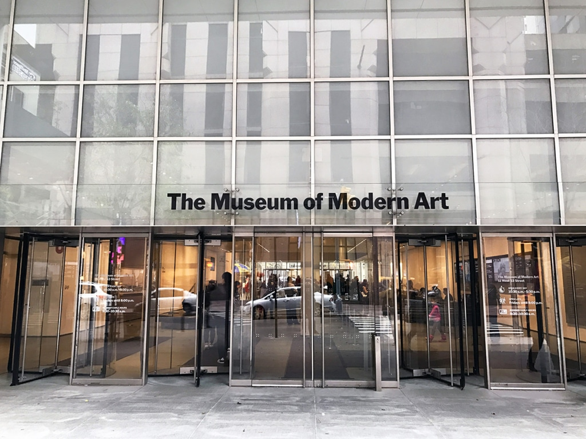
🖼️ Photo — MoMAMoMA option2 hinclus Go City -
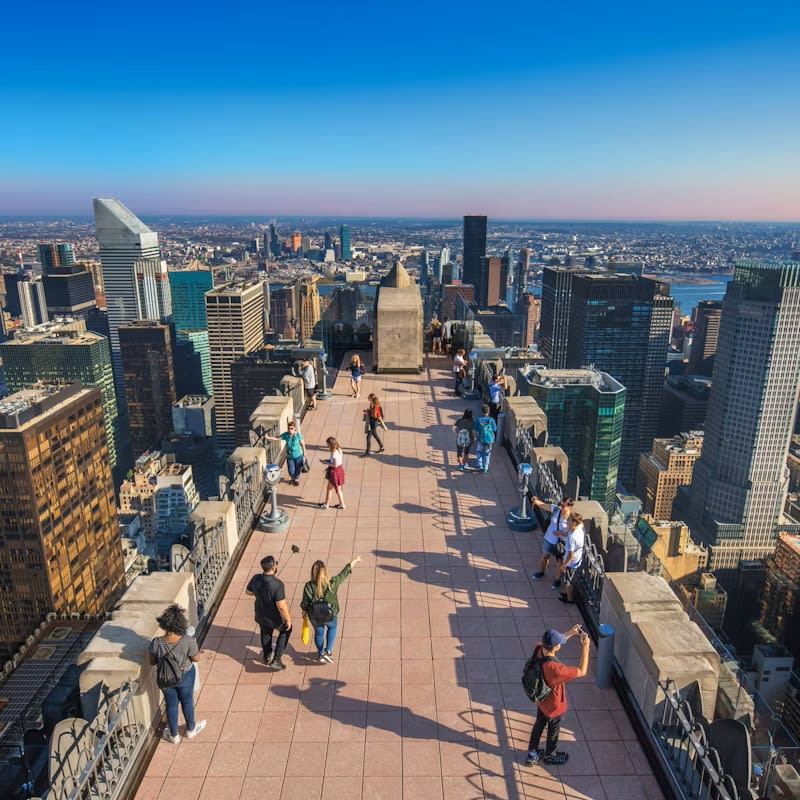
🖼️ Photo — Top of the RockTop of the Rock 1 observatoire1 h 30inclus Go City -
 🖼️ Photo — Times SquareTimes Square30 mingratuit
🖼️ Photo — Times SquareTimes Square30 mingratuit - 🖼️ Photo — Dîner rapide avant le show — Theater DistrictDîner rapide avant le show Theater District
Bien des spots pré-théâtre autour de la 46e (Ellen's Stardust, Junior's cheesecake, food halls). Prévoyez de manger tôt (spectacle ~19h/20h). - 🖼️ Photo — 🎭 Spectacle de Broadway🎭 Spectacle de Broadwaysoirée (~2 h 30)billet à partL'idée pour cette soirée. Réservez à l'avance (ou billets réduits du jour au kiosque TKTS de Times Square). Pensez aux places PMR à réserver tôt. Alternative ce soir-là si jamais vous préférez : Knicks, soirée d'ouverture au MSG.
03
Mer. 21 — Brooklyn Bridge & Nets 🏀
~6 h + match
🖼️ Photo — Mer. 21 — Brooklyn Bridge & Nets 🏀
🚆
Aller au 1er spot : Journal Square → PATH ligne World Trade Center (~13 min), puis ~10 min à pied vers l'entrée du pont (City Hall). Total ~40 min.
-
 🖼️ Photo — Traversée du pont de BrooklynTraversée du pont de Brooklyn1 hgratuit
🖼️ Photo — Traversée du pont de BrooklynTraversée du pont de Brooklyn1 hgratuit - 🖼️ Photo — DUMBO (Washington Street)DUMBO (Washington Street)1 hgratuit
- 🖼️ Photo — Brooklyn Bridge ParkBrooklyn Bridge Park1 hgratuit
- 🖼️ Photo — Déjeuner — DUMBODéjeuner DUMBO
Time Out Market New York (halle avec plein de stands + terrasse vue sur le pont — parfait à 7). Ou les pizzas cultes : Juliana's / Grimaldi's. -
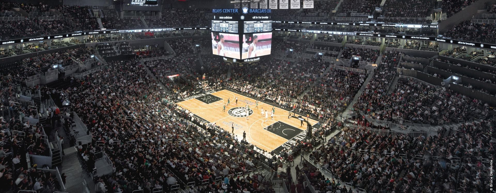
🖼️ Photo — 🏀 Nets vs Hornets — Barclays Center🏀 Nets vs Hornets — Barclays Center~3 h (19h30)billet à partC'est le match de basket qu'on vise. Salle accessible (Atlantic Av-Barclays), places PMR à réserver tôt. Dînez vers Atlantic Ave avant le coup d'envoi.
04
Jeu. 22 — Central Park, The Met & temps libre
~5-6 h + libre
🖼️ Photo — Jeu. 22 — Central Park, The Met & temps libre
🚆
Aller au 1er spot : Journal Square → PATH ligne 33rd St (~20 min), puis métro vers le nord (C jusqu'à la 72e, ou 6 jusqu'à la 86e). Total ~55 min.
- 🖼️ Photo — Central Park (couleurs d'automne)Central Park (couleurs d'automne)2 h 30gratuit
- 🖼️ Photo — Déjeuner — Central Park / Upper East SideDéjeuner Central Park / Upper East Side
Dans le parc : stands hot-dogs & pretzels, ou pause au Loeb Boathouse (au bord du lac). Vers le Met (Madison Ave) : Le Pain Quotidien ou le diner Nectar. -
 🖼️ Photo — The Metropolitan Museum (Met)The Metropolitan Museum (Met)2 h 30≈ 30 $
🖼️ Photo — The Metropolitan Museum (Met)The Metropolitan Museum (Met)2 h 30≈ 30 $ - 🖼️ Photo — Alt. : Muséum d'Histoire naturelleAlt. : Muséum d'Histoire naturelle côté ouest2-3 hinclus Go City
-
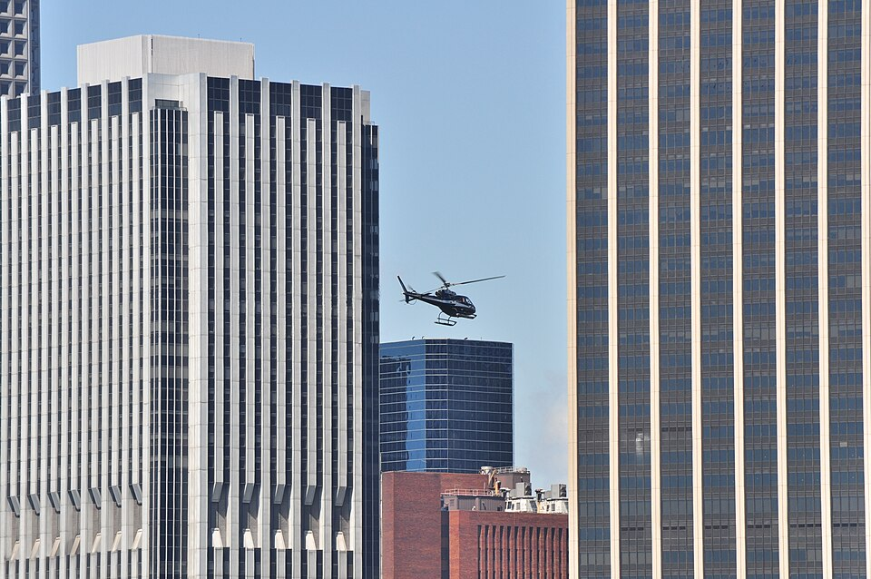
🖼️ Photo — Temps libre / au choix — le groupe se sépareTemps libre / au choix — le groupe se séparefin d'aprèm → soirà partC'est le créneau pour ceux qui veulent des sensations, pendant que les autres soufflent :
• 🚁 Survol de Manhattan en hélicoptère — départ à l'héliport de Downtown Manhattan (Pier 6, près de Wall St / du 9/11), vol ~15-20 min, vues de dingue. À réserver, mieux vaut avant le coucher du soleil (~18h en octobre).
• 🎯 Stand de tir — plusieurs ranges dans le New Jersey, proches de votre base (côté Jersey City / Union). À réserver (pièce d'identité demandée).
• Les autres : shopping 5e Avenue / Madison, café, ou retour au logement pour se reposer.
Journée volontairement plus légère pour laisser ce bloc. Si ça ne rentre pas, le lundi (jour du départ) est aussi une grande fenêtre libre.
05
Ven. 23 — Statue de la Liberté & Downtown
~7-8 h
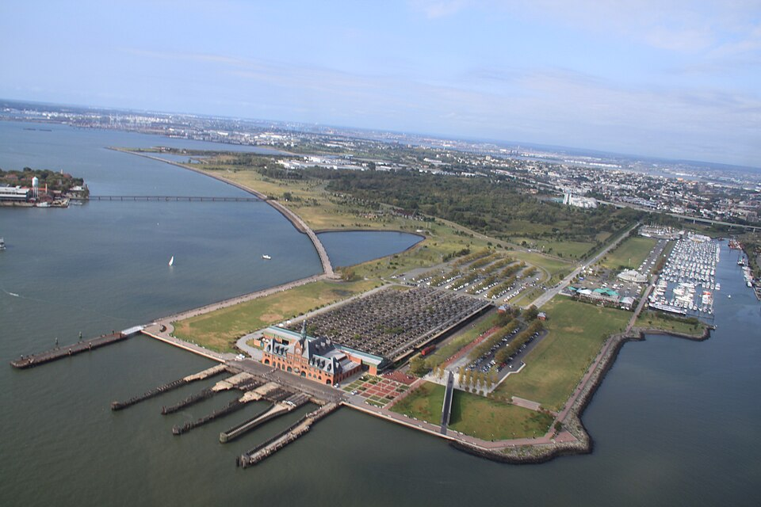
🖼️ Photo — Ven. 23 — Statue de la Liberté & Downtown🚕
Aller au 1er spot : Liberty Ave → embarcadère de Liberty State Park en VTC ~10 min (ou Light Rail). Ferry côté Jersey City = moins de queue.
- 🖼️ Photo — Statue de la Liberté (Liberty Island)Statue de la Liberté (Liberty Island)1 h 30inclus Go City (ferry)
-
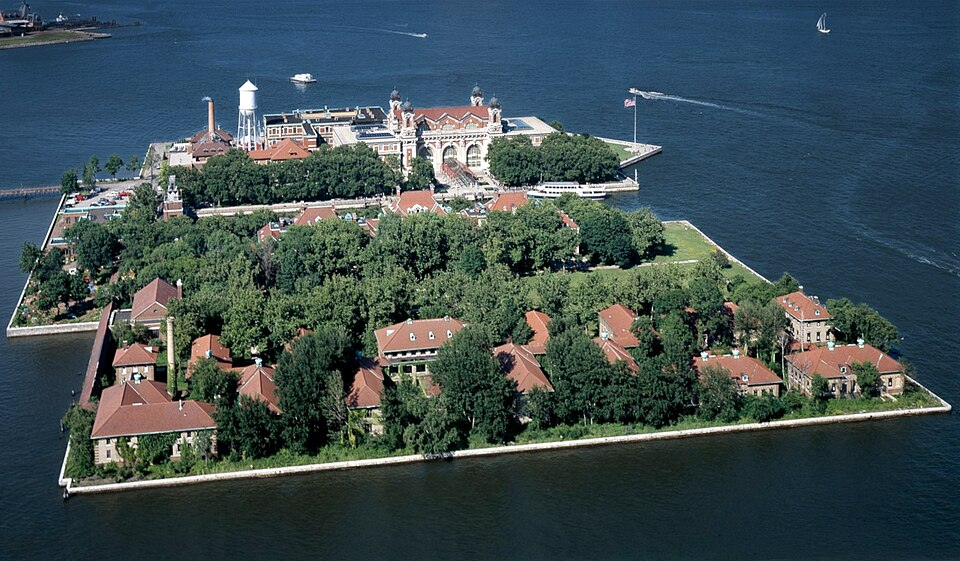
🖼️ Photo — Ellis IslandEllis Island2 hinclus Go City (ferry) - 🖼️ Photo — Déjeuner — Financial District / World Trade CenterDéjeuner Financial District / World Trade Center
De retour à Manhattan : Hudson Eats (halle à Brookfield Place, vue Hudson) ou Liberty Market dans l'Oculus. Bonus vendredi : Smorgasburg WTC, le marché de food trucks — uniquement le vendredi, juste à côté ! - 🖼️ Photo — 9/11 Mémorial & Musée + Oculus9/11 Mémorial & Musée + Oculus2 h 30inclus Go City
- 🖼️ Photo — One World ObservatoryOne World Observatory 1 observatoire1 h 30inclus Go City💡 L'héliport de Downtown est juste à côté d'ici : si l'hélico vous tente plutôt aujourd'hui que jeudi, ce quartier s'y prête bien.
-
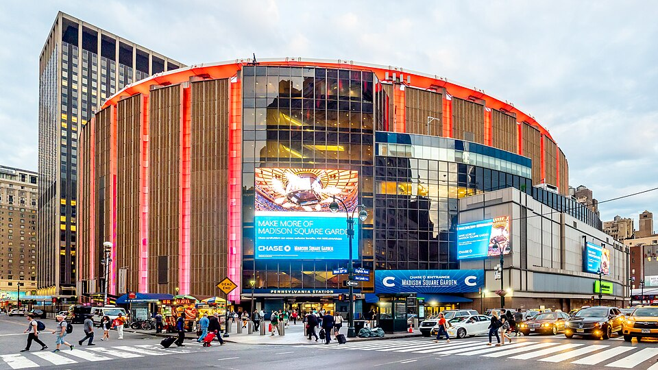
🖼️ Photo — Soir : Knicks vs Celtics (MSG)Soir : Knicks vs Celtics (MSG) en plus, optionsoiréebillet à partLe match de basket qu'on vise reste celui des Nets (mercredi). Ceci n'est qu'un bonus si certains veulent aussi vivre le MSG.
06
Sam. 24 — High Line, Village & SoHo
~6-7 h
🖼️ Photo — Sam. 24 — High Line, Village & SoHo
🚆
Aller au 1er spot : Journal Square → PATH ligne 33rd St, puis ~12 min à pied (ou 1 station ligne 7) jusqu'à Hudson Yards / entrée nord de la High Line.
- 🖼️ Photo — The Edge / Hudson YardsThe Edge / Hudson Yards 1 observatoire1 h 30inclus Go City
- 🖼️ Photo — The High LineThe High Line1 hgratuit
- 🖼️ Photo — Déjeuner — ChelseaDéjeuner Chelsea
Chelsea Market — la halle gourmande au pied de la High Line (tacos Los Tacos No.1, lobster rolls, ramen, pâtisseries…). Idéal à 7. - 🖼️ Photo — Little IslandLittle Island crochet30 mingratuit
- 🖼️ Photo — Washington Square & Greenwich VillageWashington Square & Greenwich Village45 mingratuit
- 🖼️ Photo — SoHo → Chinatown / Little ItalySoHo → Chinatown / Little Italy1 h 30gratuit
- 🖼️ Photo — Dîner — Village / ChinatownDîner Village / Chinatown
Pizza légendaire chez John's of Bleecker Street (Village). Ou dumplings à Chinatown : Shanghai 21 (soup dumplings) ou Jiang Nan.
07
Dim. 25 — Football : Jets vs Dolphins 🏈
demi-journée
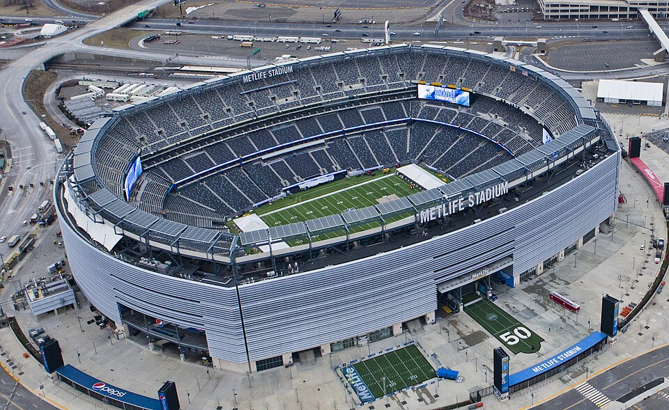
🖼️ Photo — Dim. 25 — Football : Jets vs Dolphins 🏈🚐
Aller au stade : Liberty Ave → MetLife Stadium en van / 2 UberXL (~20-30 min). Coup d'envoi 13h → partez vers 11h-11h30 pour l'avant-match.
-
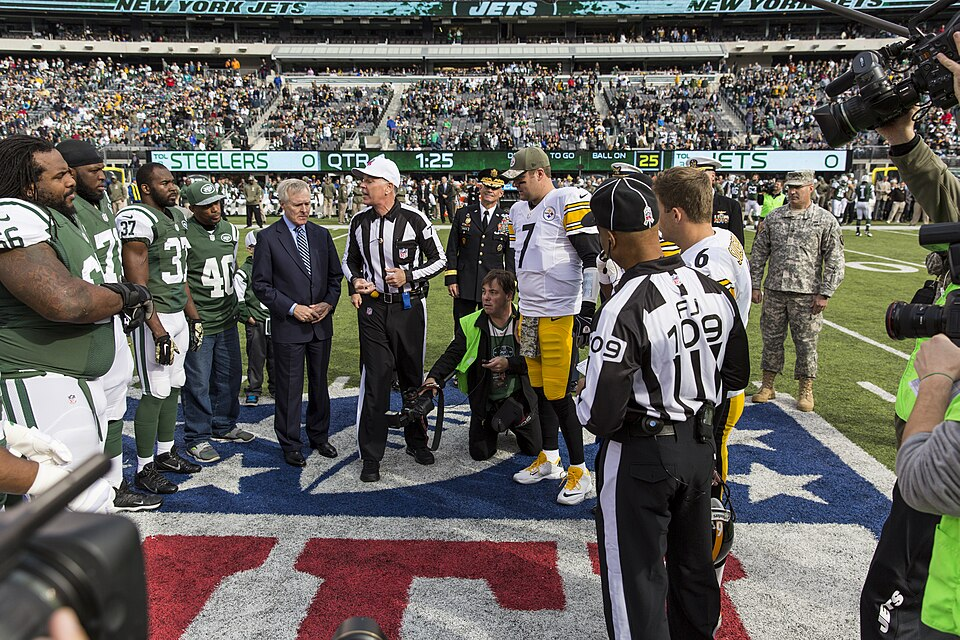
🖼️ Photo — 🏈 Jets vs Dolphins — MetLife Stadium🏈 Jets vs Dolphins — MetLife Stadium~4 h (avant-match + jeu)billet à partC'est le match de foot US qu'on vise. Stade accessible (dépose & places PMR, à réserver tôt). Vêtements chauds : stade à ciel ouvert. -
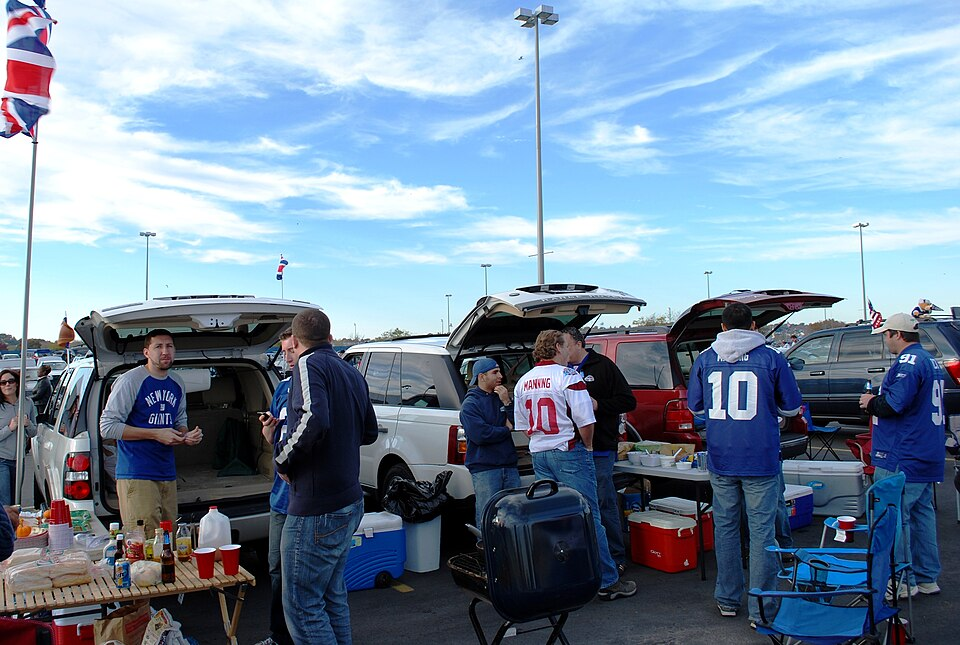
🖼️ Photo — Sur place — MetLifeSur place MetLife
Stands du stade (hot-dogs, burgers, bretzels géants…) et tailgate sur le parking. Prévoir carte/cash. - 🖼️ Photo — Matinée / soirée libreMatinée / soirée libreau ralentigratuit
08
Lun. 26 — Dernière journée & départ
journée libre
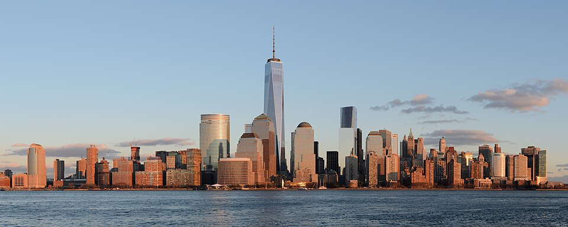
🖼️ Photo — Lun. 26 — Dernière journée & départ✈️
Vol : départ 23h55 de JFK → à l'aéroport vers 20h30-21h, donc départ du logement ~19h30-20h en van. Checkout ~11h : laissez les bagages en consigne.
- 🖼️ Photo — Grande fenêtre libre (2e créneau hélico / stand de tir possible)Grande fenêtre libre (2e créneau hélico / stand de tir possible)la journéeà partJournée ouverte : parfait comme rattrapage pour l'hélico ou le stand de tir si ça n'a pas pu se faire jeudi, ou pour un dernier lieu (Flatiron, shopping, brunch). Pensez à la consigne à bagages.
-
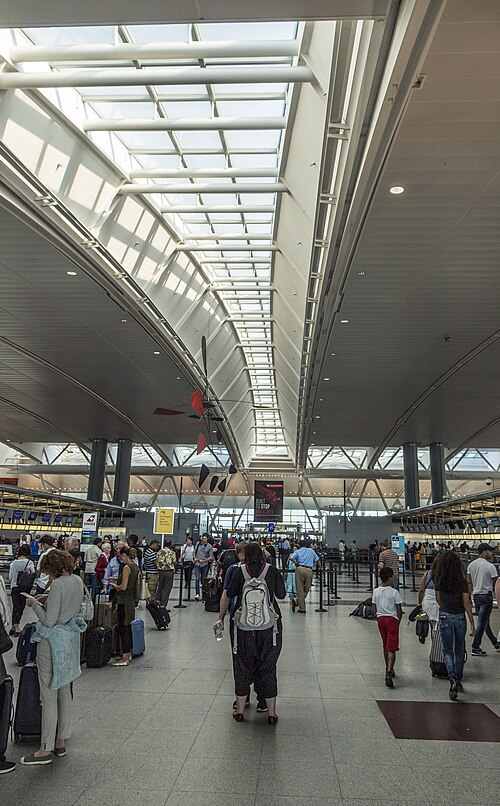
🖼️ Photo — Récupération bagages → JFKRécupération bagages → JFK~1 h de routeà part
💡
Suggestions d'activités
—
Une envie, un spot, un resto qui n'est pas au programme ? Proposez-le ici : tout le monde le voit en direct, on tranchera ensemble.
| Activité | Ça m'intéresse | Proposé par |
|---|